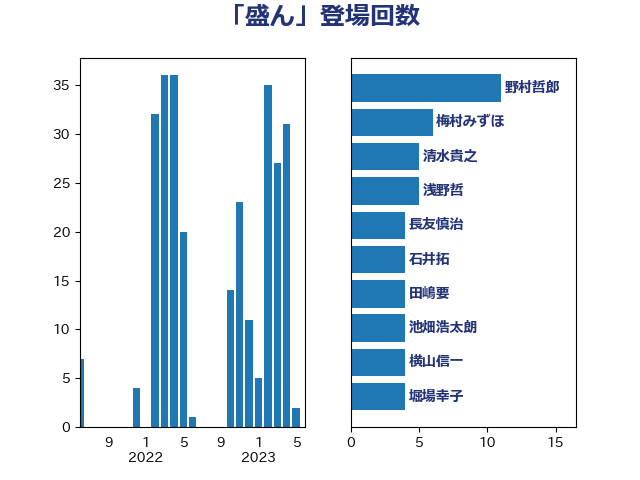

単語「盛ん」

| 野上浩太郎 | 自由民主党 | 5 回 |
| 横山信一 | 公明党 | 4 回 |
| 清水貴之 | 日本維新の会 | 4 回 |
| 石橋通宏 | 立憲民主党 | 4 回 |
| 紙智子 | 日本共産党 | 4 回 |
| 萩生田光一 | 自由民主党 | 4 回 |
| 上杉謙太郎 | 自由民主党 | 3 回 |
| 五十嵐清 | 自由民主党 | 3 回 |
| 吉川元 | 立憲民主党 | 3 回 |
| 大串博志 | 立憲民主党 | 3 回 |
| 山下芳生 | 日本共産党 | 3 回 |
| 山岡達丸 | 立憲民主党 | 3 回 |
| 川田龍平 | 立憲民主党 | 3 回 |
| 斎藤洋明 | 自由民主党 | 3 回 |
| 浅野哲 | 国民民主党 | 3 回 |
| 牧山ひろえ | 立憲民主党 | 3 回 |
| 田名部匡代 | 立憲民主党 | 3 回 |
| 自見はなこ | 自由民主党 | 3 回 |
| 藤丸敏 | 自由民主党 | 3 回 |
| 須藤元気 | 無所属 | 3 回 |
| 中川郁子 | 自由民主党 | 2 回 |
| 中野洋昌 | 公明党 | 2 回 |
| 井上哲士 | 日本共産党 | 2 回 |
| 伊佐進一 | 公明党 | 2 回 |
| 伊波洋一 | 無所属 | 2 回 |
| 倉林明子 | 日本共産党 | 2 回 |
| 北神圭朗 | 無所属 | 2 回 |
| 奥野総一郎 | 立憲民主党 | 2 回 |
| 山本剛正 | 日本維新の会 | 2 回 |
| 山谷えり子 | 自由民主党 | 2 回 |
| 平沼正二郎 | 自由民主党 | 2 回 |
| 末松信介 | 自由民主党 | 2 回 |
| 末松義規 | 立憲民主党 | 2 回 |
| 杉本和巳 | 日本維新の会 | 2 回 |
| 松沢成文 | 日本維新の会 | 2 回 |
| 梅村みずほ | 日本維新の会 | 2 回 |
| 武井俊輔 | 自由民主党 | 2 回 |
| 石井拓 | 自由民主党 | 2 回 |
| 福田昭夫 | 立憲民主党 | 2 回 |
| 篠原孝 | 立憲民主党 | 2 回 |
| 茂木敏充 | 自由民主党 | 2 回 |
| 遠藤良太 | 日本維新の会 | 2 回 |
| 重徳和彦 | 立憲民主党 | 2 回 |
| 高木啓 | 自由民主党 | 2 回 |
| 高橋はるみ | 自由民主党 | 2 回 |
| ながえ孝子 | 無所属 | 1 回 |
| 三浦信祐 | 公明党 | 1 回 |
| 上田清司 | 国民民主党 | 1 回 |
| 上田英俊 | 自由民主党 | 1 回 |
| 井上貴博 | 自由民主党 | 1 回 |
| 伊藤岳 | 日本共産党 | 1 回 |
| 住吉寛紀 | 日本維新の会 | 1 回 |
| 佐々木さやか | 公明党 | 1 回 |
| 佐々木紀 | 自由民主党 | 1 回 |
| 佐藤公治 | 立憲民主党 | 1 回 |
| 加藤竜祥 | 自由民主党 | 1 回 |
| 務台俊介 | 自由民主党 | 1 回 |
| 勝俣孝明 | 自由民主党 | 1 回 |
| 勝部賢志 | 立憲民主党 | 1 回 |
| 吉川ゆうみ | 自由民主党 | 1 回 |
| 吉川赳 | 無所属 | 1 回 |
| 吉田宣弘 | 公明党 | 1 回 |
| 吉良よし子 | 日本共産党 | 1 回 |
| 塩崎彰久 | 自由民主党 | 1 回 |
| 大西健介 | 立憲民主党 | 1 回 |
| 宮崎雅夫 | 自由民主党 | 1 回 |
| 小川淳也 | 立憲民主党 | 1 回 |
| 小森卓郎 | 自由民主党 | 1 回 |
| 小池晃 | 日本共産党 | 1 回 |
| 小野泰輔 | 日本維新の会 | 1 回 |
| 山下雄平 | 自由民主党 | 1 回 |
| 山崎正恭 | 公明党 | 1 回 |
| 山本博司 | 公明党 | 1 回 |
| 平山佐知子 | 無所属 | 1 回 |
| 平木大作 | 公明党 | 1 回 |
| 平林晃 | 公明党 | 1 回 |
| 庄子賢一 | 公明党 | 1 回 |
| 掘井健智 | 日本維新の会 | 1 回 |
| 斉藤鉄夫 | 公明党 | 1 回 |
| 斎藤アレックス | 国民民主党 | 1 回 |
| 斎藤嘉隆 | 立憲民主党 | 1 回 |
| 新垣邦男 | 立憲民主党 | 1 回 |
| 柳ヶ瀬裕文 | 日本維新の会 | 1 回 |
| 根本幸典 | 自由民主党 | 1 回 |
| 梶山弘志 | 自由民主党 | 1 回 |
| 河西宏一 | 公明党 | 1 回 |
| 河野太郎 | 自由民主党 | 1 回 |
| 浜野喜史 | 国民民主党 | 1 回 |
| 渡辺周 | 立憲民主党 | 1 回 |
| 渡辺猛之 | 自由民主党 | 1 回 |
| 熊谷裕人 | 立憲民主党 | 1 回 |
| 片山大介 | 日本維新の会 | 1 回 |
| 牧島かれん | 自由民主党 | 1 回 |
| 田嶋要 | 立憲民主党 | 1 回 |
| 白石洋一 | 立憲民主党 | 1 回 |
| 石井正弘 | 自由民主党 | 1 回 |
| 石井苗子 | 日本維新の会 | 1 回 |
| 稲津久 | 公明党 | 1 回 |
| 篠原豪 | 立憲民主党 | 1 回 |
| 舟山康江 | 国民民主党 | 1 回 |
| 若宮健嗣 | 自由民主党 | 1 回 |
| 藤木眞也 | 自由民主党 | 1 回 |
| 西銘恒三郎 | 自由民主党 | 1 回 |
| 足立敏之 | 自由民主党 | 1 回 |
| 近藤和也 | 立憲民主党 | 1 回 |
| 野田聖子 | 自由民主党 | 1 回 |
| 鈴木俊一 | 自由民主党 | 1 回 |
| 鈴木憲和 | 自由民主党 | 1 回 |
| 長浜博行 | 無所属 | 1 回 |
| 青山大人 | 立憲民主党 | 1 回 |
| 音喜多駿 | 日本維新の会 | 1 回 |
| 馬場伸幸 | 日本維新の会 | 1 回 |
| 高橋英明 | 日本維新の会 | 1 回 |